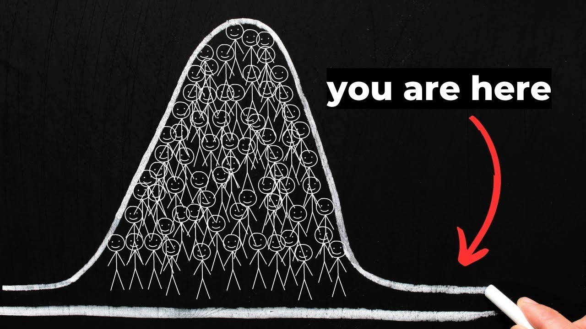

How to Get Ahead of 99% of People (Starting Today)

It is easy. If you want to outperform 99% of the people in the world, you need to be willing to do something that 99% of people are not willing to do. -You are a marvel, my dear. - Now, I know this seems obvious, but there was a little meme with a bunch of videos that claims to make you more successful than 99% of people in the world. And it turns out it's all the same [ __ ] you read in every other article.
Have goals, be more disciplined, get rid of distractions. Something called monk mode. Are we serious now guys? Goals guys? Objectives?
That's what got Bill Gates there, right? He had some goals. The postman has goals. My housekeeper is disciplined. - Yes.
-Everyone is trying to remove distractions. These things are not something that 99% of people don't do. And by the way, have you looked at the most successful people in the world? There is nothing resembling monastic behavior among them.
Because let's be real, if an action is popular, that is, if you can actually get on YouTube and find hundreds of videos asking you to do it, it's not going to make you any more successful than 99% of people.
By definition, to be more successful than anyone else, you have to do what no one else is doing. This is a harsh reality for you. When it comes to success, productivity hacks, and morning routines, most of that nonsense doesn't matter. To prove my point, I'm going to share with you some key habits of some of the world's most successful people throughout history, starting with myself.
See, when I started my business, I would wake up every morning around 11:00 a.m. and I would get a Red Bull and some Reese's Cups. Then I stay in bed for another two hours sitting on my laptop. Well, tastes like ambition. I did this for three years, and built a six-figure business in my mid-20s doing it.
In the first half of this video, I'll break down what makes someone more successful than 99% of people on the planet. But before you get excited and start rubbing your nipples...
No, I won't do that.
I won't go there. The second half of this video will explain to you why you don't want to be more successful than 99% of people on the planet. Because like the most important things in life, success is not easy. It's actually very complicated. So let's get into it.
If you really want to be more successful than 99% of people, you have to have an opposing idea. Second, be right about the idea. And third, implement it at scale. Let's start with number one. Most people don't have a conflicting thought in their lives.
Let's be honest, most people just go with the flow and go with what their friends say is cool that week.
But there is a significant minority of people in society who will think for themselves and come up with some conflicting ideas, or buy into some crazy theories. Which brings us to number two. Of all the people who have conflicting thoughts, the vast majority of those conflicting thoughts will not be true. They will be horribly wrong, they will be embarrassingly wrong.
This is actually the hardest part about achieving an insane amount of success. You have to disagree with everyone and then be right. And even if you don't agree with everyone and you're right, you have to be willing to act. You have to put your ass on the line.
Now, when we look at highly successful people, we tend to focus on the last part.
What is his morning routine? What kind of supplements did you take? Implementation is discussed most often because it is easy to monitor. It's also easy to repeat. So while execution is extremely important, it is not the thing that determines the magnitude of a person's success.
Steve Jobs wasn't Steve Jobs because he woke up early and ate some fruit. Steve Jobs was Steve Jobs because he believed a decade before anyone else that one day a computer would sit on every desk and be in every office in the entire world.
And he was right about that. Warren Buffett goes to McDonald's every morning and gets the same breakfast that you and I are looking at. How is he not dead yet?
Warren Buffett is Warren Buffett because he consistently identified companies that were highly valued and that most people thought were full of them.
Then he bought them, then sat around eating McDonald's food and drinking Coca-Cola. And I waited a few decades, which by the way is another thing most people don't want to do, and now he's the biggest investor ever. Implementation is overrated.
If I can do one thing that will drive 100 times my results, the other 99 things don't really matter. But people don't like to hear this because it's incredibly difficult to find one thing that will deliver 100 times your results. It is almost nowhere to be found. So instead, we make videos about, you know, morning routines, and eating.
As if eating the same meal that Kobe Bryant ate before basketball games will make you play basketball like Kobe Bryant, which by the way, I already have what Kobe Bryant ate before every basketball game. Orange or grape soda, and pepperoni pizza.
Well, big Kobe Bryant fan. See, implementation is essential. It's not enough. And 99% of the advice you'll put out into the world is about implementation. The hardest part about achieving great success is not the work, anyone can put in the work.
It is a true contradiction. It is the desire to question widely held assumptions. It is the ability to look for alternatives or opportunities that most people cannot be bothered with. It's the ability to hold unpopular beliefs and then stick to them when people start making fun of you. We forget that Steve Jobs had hordes of haters throughout the 80s and 90s.
If you look at the biggest breakthroughs throughout human history, they were all true contrarian ideas. At one point, every one of these ideas seemed ridiculous. And every moment someone very famous said, "That's not silly, I think I can do it.
" If I'm honest about my career, I've worked hard over the past 15 years. I have sold millions of books, thousands of courses, and traveled around the world many times speaking in a dozen or more countries.
90% of the results actually came down to two, maybe three correct contradictory thoughts I had at the time. The biggest and most obvious one was writing “The Subtle Art of Not Giving a [ __ ].” I mean, at the time, the conventional wisdom was that millennials weren't actually interested in self-help, and that men weren't actually interested in self-help.
But I discovered over many years of blogging, that this wasn't true. You just had to connect with these new audiences in a different way. Everything I've done is either a footnote or just a continuation of that, or one or two valid contradictory decisions I've made throughout my career.
I think this is true for most people who have achieved great success, no matter what field they work in. For example, Warren Buffett recently wrote, “In 58 years of running Berkshire, most of my capital allocation decisions have never been better.
Our results have been the product of dozens of really good decisions.” This is [ __ ] mind-blowing. This guy's been doing this for 60 years, and he says, "I've made about a dozen good decisions." As a successful person, there is a temptation to think that you know what you are doing more than you actually do.
It is not intuitive that one simple decision can have such a huge impact on a person's career.
So you start convincing yourself, "Yes, I know the secret to waking up early, and working hard in the gym." Or, “I know how to run meetings better than anyone else,” when in reality, you're probably just above average.
Because it doesn't matter if you put butter in your coffee, or if you have a standing desk, or if you use Evernote instead of Google Docs. It's like moving around the furniture in a house and claiming it's a better house. If you don't believe me, go out and meet a hundred successful entrepreneurs.
I guarantee they're not at the gym at 4:30 in the morning. They don't meditate for two hours a day, because the real world is much more chaotic. It's also more fun. Winston Churchill basically won World War II sitting in a bathtub drinking scotch all day.
That's right, go look for it.
Or like Thomas Edison. He famously worked for several days in a row, sleeping one hour a night in his laboratory. Want to know what his secret is? Cocaine, don't bother you. That's why we have a light bulb.
Oh. Oh yes. Speaking of cocaine, let's talk about the downsides of being too successful, or why you might not actually want to outperform 99% of people.
Now, the first and most obvious reason is that no one likes contrarians. I think a lot of people fantasize about extreme success, because deep down they believe it will bring them the validation and approval they've always craved.
But unfortunately, the opposite often happens. I remember when I quit my day job in 2008 to work at my online business full time, everyone thought I was crazy. Like half of my friends in the corporate world stopped hanging out with me.
I'm also sure a bunch of my family became convinced I was like a drug dealer or something. I wonder where they got this idea? See, at that time, no one understood what digital marketing was. All the people in my life knew that I was broke for a long time and then one day I showed up with internet money. I could see why they were skeptical.
You have to understand that when you go from an incorrect antonym to a correct antonym, it kind of messes with everyone's heads. Extreme success is only meaningful if the thing you were rightly opposed to is also meaningful.
Ironically, extreme success only improves relationships that never needed improvement in the first place. The second reason you don't want to be more successful than 99% of people is that in order to be properly paradoxical, you have to be incorrectly paradoxical a lot.
The truth is that most conflicting beliefs are contradictory for very good reason. Because they are wrong. People have tried, failed horribly, and then spent the rest of their lives wondering what they were thinking.
If you're young, this is especially hard, because you probably don't realize how many conflicting thoughts older people actually had at some point, but tried it, failed miserably, and then moved on. Spoiler, it's probably most of them.
And finally, I think this is the most important point of this video, which is that extreme success will not make you happy. In fact, success multiplies who you already are and how you already feel. So for people who are angry and depressed, success makes them even more angry and depressed.
People who have great relationships, success makes relationships better. In the end, extreme success should not be the goal. You should be passionate about pursuing your right contrarian idea because it is so important that you can't imagine doing it any other way.
If you just want to have enough money to buy a nice car, and spray a bottle of champagne on a girl in a bikini, that can be arranged, I know a guy. Because that wasn't 99% successful.
This worked 80%. Maybe instead of asking yourself how to become more successful than 99% of people, you should ask yourself, “Why do I want to become more successful than 99% of people?” Because this is the question that will provide you with more useful answers.
Before you run away and try to become an obscenely successful badass, maybe you should slow down for a minute. And make sure you set the right definition of success for yourself first.